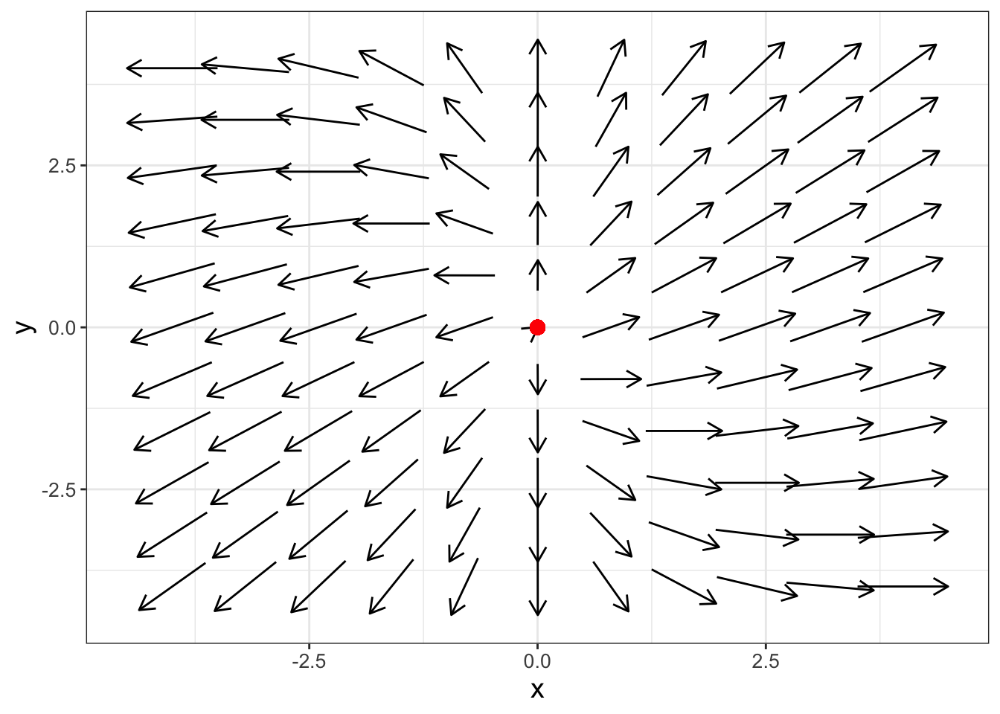
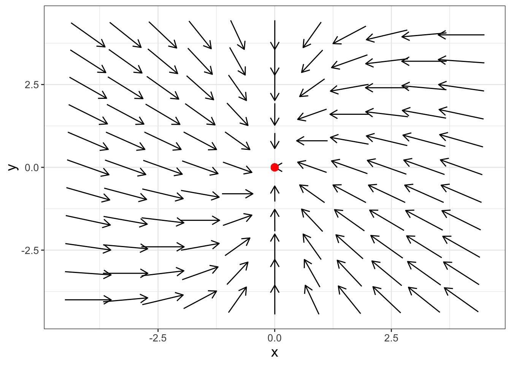
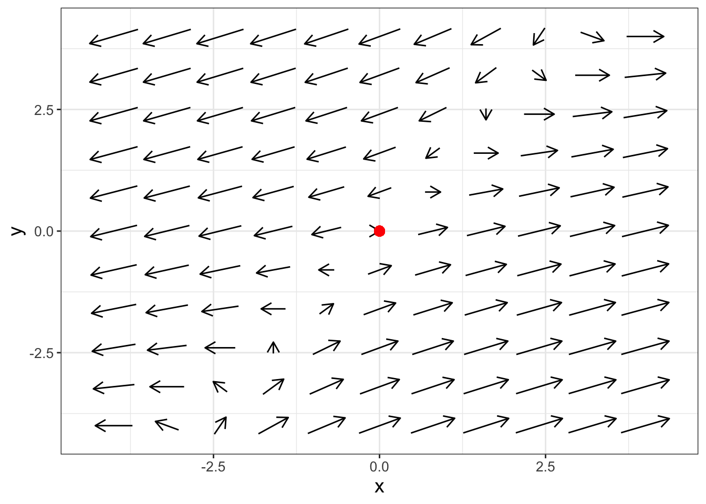
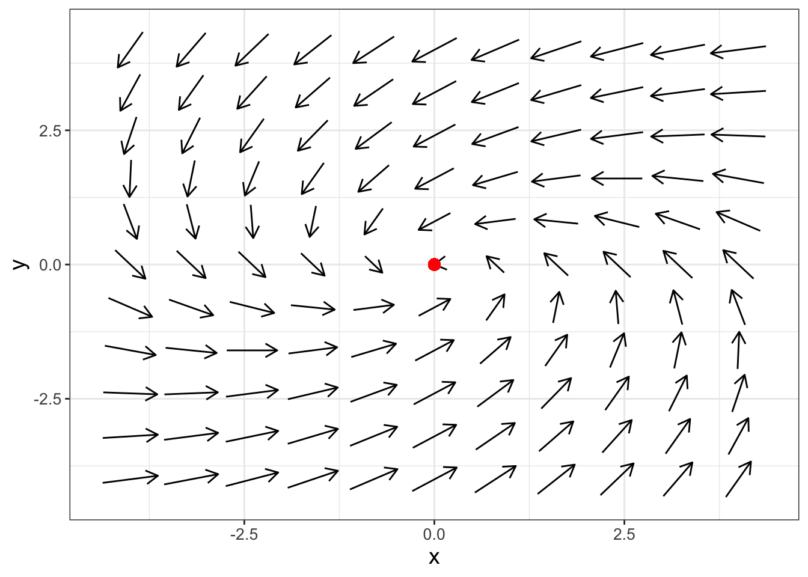

This chapter focuses on developing a tool to understand the stability of an equilibrium solution. This tool is determining eigenvalues and eigenvectors. We connect eigenvectors and eigenvalues back to straight-line solutions introduced in Chapter 15. You will see how eigenvalues are determined is through solving a polynomial equation. Finally we investigate how the values of the eigenvalues are reflected in the directions of the arrows in the phase plane. There is a lot here to unpack, so let’s get started!
Note
This chapter uses following libraries: ggplot2 (part of the tidyverse) and demodelr. See Section 2.3 on how to install packages. Prior to running any code in this section, include library(tidyverse) and library(demodelr).
18.2 Straight line solutions
Consider this following linear system of equations:
Let’s compare this solution to the right hand side of the differential equation, recognizing that the \(x\) component of \(\vec{s}_{2}(t)\) is \(-e^{3t}\) and the \(y\) component of \(\vec{s}_{2}(t)\) is \(e^{3t}\):
So, indeed \(\vec{s}_{2}(t)\)is a solution to the differential equation. However something interesting is occurring. Notice how \(\displaystyle \frac{d}{dt} \left( \vec{s}_{2}(t) \right)\) equals \(3 \vec{s}_{2}(t)\), which was the same as the right hand side of the differential equation.
While we wrote the right hand side of Equation 18.1 component by component, we could also write it as \(A \vec{x}\), where \(\displaystyle A = \begin{pmatrix} 2 & -1 \\ 2 & 5 \end{pmatrix}\). Because we verified \(\vec{s}_{2}(t)\) was a solution to the differential equation, we could also have said that \(A \vec{s}_{2}(t) = 3 \vec{s}_{2}(t)\).
So we have two interesting facts here:
A straight line solution to a system of linear differential equations \((\displaystyle \frac{d \vec{x}}{dt} = A \vec{x}\)) has the form \(\vec{s}(t) = c_{1} e^{\lambda t} \; \vec{v}\), where \(c_{1}\) is a constant and \(\vec{v}\) a constant vector.
Consequently \(\lambda \vec{s}(t)=A \vec{s}(t)\) in order for \(\vec{s}(t)\) to be a solution.
All of these facts (in particular \(\lambda \vec{s}(t)=A \vec{s}(t)\)) set up an interesting equation: \(\displaystyle \lambda c_{1} e^{\lambda t}\vec{v} = c_{1} e^{\lambda t} A \vec{v}\). Applying concepts from linear algebra, in order for the solution \(\vec{s}(t)\) to be consistent, \(A \vec{v} - \lambda I \vec{v} = \vec{0}\), where \(\vec{0}\) is a vector of all zeros and \(I\) is called the identity matrix, or a square matrix with ones along the diagonal and zero everywhere else. The goal is to find a \(\lambda\) and \(\vec{v}\) consistent with this equation.
Let’s apply some terminology here. For these special straight line solutions, we give a particular name to \(\vec{v}\) - we call it the eigenvector. The name we give to \(\lambda\) is the eigenvalue. (Eigen means own in German - get it?)
So how do we determine an eigenvalue or eigenvector? We do this by first determining the eigenvalues \(\lambda\). This is done by solving the equation \(\det (A - \lambda I ) =0\) for \(\lambda\), where \(\det(M)\) is the determinant. Once the eigenvalues are found, we then compute the eigenvectors by solving the equation \(A \vec{v} - \lambda \vec{v} = \vec{0}\).
Let’s take a time out. I recognize that we are starting to get deeper into linear algebra which may be some unfamiliar concepts. However we will just highlight key results that we will need - so hopefully that will give you a leg up when you study linear algebra - it is a great topic! Let’s get to work.
18.3 Computing eigenvalues and eigenvectors
Let’s dig into understanding the equation \(\det (A - \lambda I ) =0\) for a two-linear system of differential equations. In this case, \(A\) is the matrix \(\displaystyle \begin{pmatrix} a & b \\ c & d \end{pmatrix}\), for which then \(A - \lambda I\) is the following matrix:
\[
A - \lambda I=\begin{pmatrix} a - \lambda & b \\ c & d-\lambda \end{pmatrix}
\tag{18.2}\]
The determinant of a 2 \(\times\) 2 matrix is formed by the product of the diagonal entries less the product of the off-diagonal entries. For Equation 18.2, \(\det(A-\lambda I)=0\) is the equation \((a-\lambda)(d-\lambda)-bc=0\). Our goal is to solve this equation for \(\lambda\), which are the eigenvalues for this system.
Example 18.1 Compute the eigenvalues for the matrix \(\displaystyle A = \begin{pmatrix} -1 & 1 \\ 0 & 3 \end{pmatrix}\).
Solution 18.1. The matrix \(A-\lambda I\) is \(\displaystyle A-\lambda I = \begin{pmatrix} -1-\lambda & 1 \\ 0 & 3-\lambda \end{pmatrix}\). So we have:
Solving the equation \((-1-\lambda)(3-\lambda)=0\) yields two eigenvalues: \(\lambda = -1\) or \(\lambda = 3\).
More generally the equation \(\det(A - \lambda I)\) yields a polynomial equation in \(\lambda\). We call this equation the characteristic polynomial and denote it by \(f(\lambda)\). In the case of a two-dimensional system of equations, \(f(\lambda)\) will be a quadratic equation (see Exercise 18.9).
Once we have determined the eigenvalues, we next compute the eigenvectors associated with each eigenvalue. Remember that an eigenvector is a vector \(\vec{v}\) consistent with \(A \vec{v} = \lambda \vec{v}\) or \(A \vec{v} - \lambda \vec{v} =\vec{0}\). How we do this is through algebra, as is done in the following example:
Example 18.2 Compute the eigenvectors for the matrix \(\displaystyle A = \begin{pmatrix} -1 & 1 \\ 0 & 3 \end{pmatrix}\) from Example 18.1.
Solution 18.2. First for general \(\lambda\), consider the expression \(A \vec{v} - \lambda \vec{v} =\vec{0}\), where \(\displaystyle \vec{v} = \begin{pmatrix} v_{1} \\ v_{2} \end{pmatrix}\):
We use the two expressions (\(-v_{1} +v_{2} - \lambda v_{1} = 0\) and \(3v_{2} - \lambda v_{2} =0\)) in Equation 18.3 to determine the eigenvector \(\vec{v}\). We need to consider both eigenvalues (\(\lambda = -1\) and \(\lambda =3\)) separately to yield two different eigenvectors:
- Case 1 \(\lambda = -1\): The first expression in Equation 18.3 yields \(-v_{1} +v_{2} + v_{1} = 0\), or \(v_{2}=0\) after simplifying. For the second expression we have \(3v_{2} + v_{2} =0 \rightarrow 4v_{2} = 0\), so that tells us again that \(v_{2}=0\). Notice we’ve determined a value for the second component \(v_{2}\), but not \(v_{1}\). In this case, we say that the first component to the vector \(\vec{v}\) is a free parameter., so the eigenvector can be expressed as \(\displaystyle \begin{pmatrix} c_{1} \\ 0 \end{pmatrix}\), where \(c_{1}\) is the free parameter. Another way to express this eigenvector is \(\displaystyle c_{1} u_{1}\), with \(u_{1}=\begin{pmatrix} 1 \\ 0 \end{pmatrix}\). The eigenvector in this case is \(\displaystyle \begin{pmatrix} 1 \\ 0 \end{pmatrix}\). (We generally write eigenvectors without the arbitrary constants.) This particular straight line solution is \(\displaystyle s_{1}(t)=c_{1}e^{-t}u_{1}\), where \(c_{1}\) is a free variable.
- Case 2 \(\lambda = 3\): For the second equation we have \(3v_{2} - 3v_{2}=0\), which is always true. However in the first equation we have \(- v_{1} + v_{2} - 3v_{1} = 0\), or \(v_{2} = 4v_{1}\). In this case, \(v_{1}\) can be a free parameter; however, \(v_{2}\) will have to be four times the value of \(v_{1}\). Hence, this particular straight line solution is \(\displaystyle s_{2}(t)=e^{3t} \begin{pmatrix} c_{2} \\ 4 c_{2} \end{pmatrix}\), or also as \(\displaystyle s_{2}(t)=c_{2} e^{3t} \vec{u}_{2}\), with \(\displaystyle \vec{u}_{2}= \begin{pmatrix} 1 \\ 4 \end{pmatrix}\). The eigenvector in this case is \(\displaystyle \begin{pmatrix} 1 \\ 4 \end{pmatrix}\).
Notice that in both of our cases we had a free variable (\(c_{1}\) or \(c_{2}\)), which are also constants in our final solution for the differential equation.
Once we have computed the eigenvalues and eigenvectors, we are now ready to express the most general solution for a system of differential equations. For a two-dimensional system of linear differential equations (\(\displaystyle \frac{d}{dt} \vec{x} = A \vec{x}\)), the most general solution is given by Equation 18.5:
Example 18.3 What is the solution to the differential equation \(\displaystyle \frac{d}{dt} \vec{x} = \begin{pmatrix} -1 & 1 \\ 0 & 3 \end{pmatrix} \vec{x}\)?
Since we have already computed the eigenvalues and eigenvectors, our most general solution for this differential equation is:
with \(c_{1}\) and \(c_{2}\) defined as constants.
18.3.1 Computing eigenvalues with demodelr
While computing eigenvalues and eigenvectors is a good algebraic exercise, we can also program this in R using the function eigenvalues from the demodelr package. The syntax works where \(\displaystyle A = \begin{pmatrix} a & b \\ c & d \end{pmatrix}\) is entered in as eigenvalues(a,b,c,d,matrix_rows) where matrix_rows is the number of rows.1 What gets returned from the function will be the eigenvalues and eigenvectors for any square matrix.
Let’s compute the eigenvalues for the matrix \(\displaystyle \begin{pmatrix} -1 & 1 \\ 0 & 3 \end{pmatrix}\):
# For a two-dimensional equation the code assumes # the default is a 2 by 2 matrix.demodelr::eigenvalues(matrix_entries =c(-1, 1, 0, 3),matrix_rows =2)
Notice that the eigenvalues and the eigenvectors get returned with the eigenvalues function. How you read the output for the eigenvector is that X1 is the eigenvector associated with the first eigenvalue (\(\lambda = 3\)) and X2 is the eigenvector associated with the second eigenvalue (\(\lambda = -1\)). The eigenvector associated with \(\lambda=3\) is a little different from what we computed - R will normalize the vector, which means that its total length will be one.2 For example \(\displaystyle \vec{v}_{2} = \begin{pmatrix} 1 \\ 4 \end{pmatrix}\), so \(||\vec{v}|| = \sqrt{5}\), and the normalized vector is \(\displaystyle \begin{pmatrix} 1/\sqrt{5} \\ 4/\sqrt{5} \end{pmatrix}\), which you can verify is the same as the reported eigenvector from the eigenvalues function.
18.4 What do eigenvalues tell us?
Here the focus of the chapter changes a little bit. Now we focus on understanding how the phase plane for a differential equation gives clues about the stability for an equilibrium solution. This is intentional: once we have found the eigenvalues, determining eigenvectors can seem rather mundane at times (and perhaps heavy on the algebra). Studying the eigenvalues helps us understand the qualitative nature of the solution to a differential equation. Let’s think about the characteristic equation \(f(\lambda)\) for a two-dimensional system of differential equations:
Notice how \(f(\lambda)\) is a quadratic equation. You may recall that quadratic equations have zero, one, or two distinct solutions. If there are no solutions, we say the solutions are imaginary (more on that later). Also the signs of solutions may be positive or negative. There are so many different combinations! What types of phase planes do all those different types of eigenvalues produce? The following examine representative examples of all the possible eigenvalues you may obtain for a two-dimensional linear system of differential equations (which can be generalized to higher-dimensional systems).
18.4.1 Sources: all eigenvalues positive
Consider the differential equation in Equation 18.6:
The phase plane for this matrix \(A\) is shown in Figure 18.1:

Figure 18.1: Phase plane for Equation 18.6, which shows the equilibrium solution is a source (also known as an unstable node).
Notice how the phase plane in Figure 18.1 has all the arrows pointing from the origin. In this case we call the origin equilibrium solution a source, or also an unstable node. Plotting the components of \(\vec{x}(t)\) as functions of \(t\) would show the dependent values increase exponentially as time increases.
The eigenvalues for Equation 18.7 are both negative (verify this on your own). The resulting phase plane for Equation 18.7 then has all the arrows pointing towards the origin, shown in Figure 18.2.

Figure 18.2: Phase plane for Equation 18.7, which shows the equilibrium solution is a sink (also known as a stable node).
Based on the phase plane in Figure 18.2, solutions to Equation 18.7 would asymptotically approach the origin. We say the equilibrium solution is a sink, also known as a stable node.
18.4.3 Saddle nodes: one positive and one negative eigenvalue
Consider the differential equation in Equation 18.8:
Equation 18.8 has \(\lambda_{1}=2.414\) and \(\lambda_{2}=-0.414\) (verify this on your own). Because the differential equation has one positive and one negative eigenvalue the equilibrium solution the phase plane for this differential equation looks a little different, as is shown in Figure 18.3:

Figure 18.3: Phase plane for Equation 18.8, which shows the equilibrium solution is a saddle node.
This equilibrium solution is called a saddle node. From the horizontal direction, the arrows point away from the origin, but in the vertical direction the arrows point towards the origin. This behavior is caused by the opposing signs of the eigenvalues - one part of the solution in Equation 18.5 (the one associated with the negative eigenvalue) decays asymptotically to zero. The other positive eigenvalue is associated with the asymptotically unstable, giving the solution trajectory the shape of a saddle.
18.4.4 Spirals: imaginary eigenvalues
Consider the differential equation in Equation 18.9:
There are two eigenvalues to this system: \(\lambda = -4.5+5.45i\) and \(\lambda = -4.5 - 5.45i\) (you can confirm this on your own). In this case the \(i\) means the eigenvalues are imaginary. Notice how the eigenvalues are similar, but the signs on the second term differ. We say the eigenvalues are complex conjugates of each other, and write them in the form \(\lambda = \alpha \pm \beta i\). In this example \(\alpha = -4.5\) and \(\beta = 5.45\). Figure 18.4 shows the phase plane for this system.

Figure 18.4: Phase plane for Equation 18.9, which shows the equilibrium solution is a spiral sink.
The phase plane in Figure 18.4 has some spiraling motion to it. Why does that occur? Imaginary eigenvalues can occur when the characteristic equation \(\det(A-\lambda I)=0\) has imaginary solutions. More generally, we say \(\lambda = \alpha \pm \beta i\). Because the eigenvalues are complex, we would also expect the eigenvectors to be complex as well (i.e. \(\vec{v} \pm i \vec{w}\)). Don’t let the term imaginary fool you: by using properties from complex analysis it can be shown that when eigenvalues are imaginary, the template for the solution is given in Equation 18.10:
The trigonometric terms in Equation 18.10 suggest that the solution has some periodic behavior if we plot the components of \(\vec{x}(t)\) as functions of \(t\). But when we plot the solution in the \(xy\) plane that periodic behavior gets translated to spiraling motion in Figure 18.4. When \(\alpha < 0\) we say the equilibrium solution is a spiral sink because the exponential terms in Equation 18.10 decay asymptotically to zero.
As you would expect when \(\alpha > 0\) we classify a phase plane as a spiral source (shown in Equation 18.11 and Figure 18.5).
Figure 18.5: Phase plane Equation 18.11 which shows the equilibrium solution is a spiral source.
The final case for imaginary eigenvalues is when \(\alpha = 0\), which is termed a center. As an example, let’s examine the phase plane for the system in Equation 18.12:
Figure 18.6: Phase plane for Equation 18.12, which shows the equilibrium solution is a center.
Notice how the phase plane arrows in Figure 18.6 neither spin in nor out, but seem to point in a circle. In fact, the formula of the solution to this equation can be represented as a circle. The solution to this differential equation is a circle, which is found with \(\alpha = 0\) in Equation 18.10.
18.4.5 Repeated eigenvalues
For repeated eigenvalues (where \(\lambda_{1}=\lambda_{2}\)) the stability of the solution still depends on the sign of the sole eigenvalue \(\lambda\). However in this case the form of the solution changes as shown in Equation 18.13:
As you can see there is a lot of interesting behavior with eigenvalues and eigenvectors! But in all cases, stability of the equilibrium solution really focuses on the eigenvalues and their relative (positive or negative) sign. How the straight line solutions approach the equilibrium solution is a function of the eigenvectors.
18.6 Exercises
Exercise 18.1 What are the characteristic equations for the following systems of differential equations?
Exercise 18.2 Verify that \(\displaystyle s_{1}(t) = \begin{pmatrix} e^{3t} \\ -e^{3t} \end{pmatrix}\) is a solution to the system of differential equations \(\displaystyle \frac{dx}{dt} = 2x-y\) and \(\displaystyle \frac{dy}{dt} = 2x+5y\).
Exercise 18.3 The matrix \(\displaystyle \begin{pmatrix} 2 & -1 \\ 2 & 5 \end{pmatrix}\) has \(\lambda = 4\) as an eigenvalue. Use this information to calculate (by hand) the eigenvector \(\vec{v}\) associated with this eigenvalue.
Exercise 18.4 Compute the eigenvalues and eigenvectors for the following linear systems. Based on the eigenvalues, classify if the equilibrium solution is stable or unstable. Finally write down the most general solution for the system of equations.
There is one equilibrium solution to this system of equations. What is it?
What is the Jacobian matrix for this equilibrium solution?
Generate a phase plane for the Jacobian matrix.
What are the eigenvalues for the Jacobian matrix at the equilbrium solution?
Based on the eigenvalues, how would you classify the stability of the equilibrium solution?
Exercise 18.8 Consider the general system of differential equations \(\displaystyle \frac{d}{dt} \vec{x} = A \vec{x}\).
Given the function \(\vec{s}(t)=e^{\lambda t} \vec{v}\), where \(\vec{v}\) is a constant vector, what is an expression for \(\displaystyle \frac{d}{dt} \vec{s}(t)\)?
Given the function \(\vec{s}(t)=e^{\lambda t} \vec{v}\), where \(\vec{v}\) is a constant vector, what is an expression for \(A \; \vec{s}(t)\)?
Now use the previous results in the expression \(\displaystyle \frac{d}{dt} \vec{s}(t) = A \vec{s}(t)\). Explain why it must be the case that \(\lambda \vec{v} = A \vec{v}\) (assuming \(\vec{v} \neq 0\)).
Exercise 18.9 In this chapter we learned that for a two-dimensional matrix \(\displaystyle A = \begin{pmatrix} a & b \\ c & d \end{pmatrix}\), eigenvalues can be found by solving the characteristic equation \(\det(A-\lambda I)=0\), or \(\lambda^{2} - (a+d) \lambda + (ad-bc) = 0\). Use the quadratic formula to get an expression for the eigenvalues \(\lambda\) in terms of \(a\),\(b\), \(c\), and \(d\).
If you have a 2 by 2 matrix, you can leave out matrix_rows (so just eigenvalues(a,b,c,d)) as the default is a 2 by 2 matrix.↩︎
The length of a vector \(\vec{v}\) is denoted as \(||\vec{v}||\) and is computed the following way: \(||\vec{v}||=\sqrt{v_{1}^{2}+v_{2}^{2}+...+v_{n}^{2}}\). We normalize a vector to a length of 1 by dividing each component by its length.↩︎